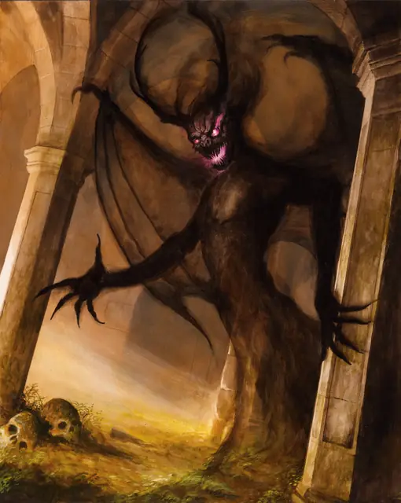

Теневой демон
Shadow Demon
Среднее Исчадие (Демон), Хаотичное Злое

Класс Защиты 14 Инициатива +3 (13)
Хиты 66 (12к8 + 12)
Скорость 30 футов, Полёта 30 футов (парит)
| мод | спас | ||
|---|---|---|---|
| СИЛ | 1 | −5 | −5 |
| ЛОВ | 17 | +3 | +5 |
| ТЕЛ | 12 | +1 | +1 |
| мод | спас | ||
|---|---|---|---|
| ИНТ | 14 | +2 | +2 |
| МДР | 13 | +1 | +1 |
| ХАР | 14 | +2 | +4 |
Уязвимость к урону Излучение
Сопротивление урону Дробящий, Колющий, Рубящий, Звук, Кислота, Огонь, Холод, Электричество
Иммунитеты Некротический, Яд; Истощение, Окаменевший, Опрокинутый, Опутанный, Отравленный, Парализованный, Схваченный
Чувства Тёмное зрение 120 футов, пассивное Восприятие 11
Языки Бездны, Телепатия 120 фт.
Опасность 4 (1 100 опыта; БВ +2)
Особенности
Восстановление демона. Если демон умирает вне Бездны, его тело растворяется в ихоре, и он мгновенно обретает новое тело, возрождаясь со всеми Хитами где-то в Бездне.
Бестелесное перемещение. Демон может перемещаться через других существ и объекты, как если бы они были Труднопроходимой местностью. Он получает 5 (1к10) Силового урона, если завершает свой ход внутри объекта.
Чувствительность к солнечному свету. Находясь на солнечном свету, демон совершает с Помехой все проверки характеристик и броски атаки.
Действия
Теневые когти. Бросок рукопашной атаки: +5, досягаемость 5 фт. Попадание: 16 (3к8 + 3) Психического урона.
Бонусные действия
Скрытность в тени. Демон совершает действие Затаивание, если находится в области Тусклого света или Темноты.
Бонус мастерства +2
Среда обитания Бездна
Сокровища Отсутствуют
Теневой демон
Отголосок зла
Теневые демоны возникают, когда исключительно злобных демонов уничтожают и не дают им восстановить физическую форму в Бездне. Такое может случиться по воле божественного вмешательства, при уничтожении демона в самой Бездне или при иных, ещё более редких обстоятельствах. Теневые демоны — бестелесные остатки злой сущности погубленных демонов. Обычно их внешность смутно напоминает прежние тела, но некоторые принимают намеренно обманчивый облик. Многие таятся в тёмных местах или выходят наружу лишь по ночам, чтобы скрыть свою истинную сущность от тех, кем они манипулируют.
Теневые демоны ищут способы вернуть былую мощь и отомстить тем, кто их уничтожил. Они часто втираются в доверие к более могущественным демонам или смертным заклинателям, заключая сделки и принуждая других вернуть им силу. Многие пытаются захватить или развратить души, чтобы восстановить свои инфернальные тела, тогда как другие ищут злые артефакты или средоточия нечестивой магии. Обычно у теневых демонов уходят века на то, чтобы вернуть свою демоническую мощь, если это вообще им удаётся.
Особо могущественные демоны после гибели порой возвращаются в виде множества теневых демонов. Каждая из этих инфернальных сущностей считает себя истинным воплощением прежнего «я» и охотится на остальных, чтобы возвратить свою силу.
В редких случаях иные Исчадия, не являющиеся демонами, могут принимать формы, схожие с теневыми демонами.